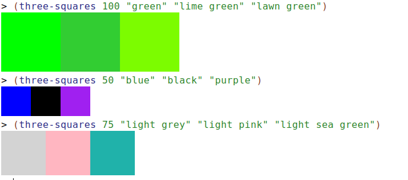

I’m going to explain how to write a function that uses images on this page. Follow along in DrRacket and things should make sense. If you have any suggestions for how to make this better, let me know.
Here are some examples in the Interactions window of what we want the function three-squares to do:

As you can see from the examples, the function three-squares takes four arguments when you call it: a number and three colors. That means the function has four parameters. What it returns is a picture or image. We now have enough information to write the very first thing we should write when we’re creating a function - the Signature.
{
A signature tells DrRacket and anyone reading the code the following things:
The way you write a signature looks like this:
(: <name-of-function> (<type of parameter 1> <type of parameter 2> ... -> <return type>))
All of the stuff in angle brackets (<>) and the ... are things you fill in. The rest is stuff you just have to type. In other words, every signature will have this shape:
(: ( -> ))
Those two sets of parentheses, the colon and the arrow (remember it’s just minus plus greater than) will never change.
Now we’re ready to write the signature for three-squares. Let’s look at what we said the signature tells you and fill in what we know about three-squares:
three-squares
If you just remember that the types have to be capitalized, you should see what we’re going to put:
(: three-squares (Number Color Color Color -> Image))
We’re ready for step 2, the header.
When we write the header, we just have to come up with names for the parameters we decided on in the signature. The header looks like this:
(define (<function-name> <name of parameter 1> <name of parameter 2> ...) ...)